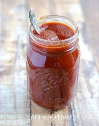

Our Flavors
Sweet Tangy BBQ
The original recipie of our Grandfather. This sweet Texas style BBQ made from all natural ingredients will knock off any of the competitions BBQ due to its sweet flavor and rich flavoring. This recepie has never been touched and will be the old classic of Dads BBQ.

Habanero Devil Fire
This BBQ will be sure to knock you back a few as it is our spicy BBQ and will fore sure have you sweating. This BBq is mixed with 10 different spices and pepers that make this our patented spicy BBQ. Voted 2nd most hottest BBQ since 2014 in all of Texas and we plan to keep making our recpie hotter
.jpg)
Alabama Zesty White BBQ
Our Alabama Zesty White BBQ was inspired in 1974 in Albama by our grandfather. THis BBQ is a cool and tangy BBQ that is extreamly uquie, but extreamly liked thoughout resturauants all over America. This BBQ is something for people who love a sweet tangy flavor and cool ranch feeling. This one is perfect for any brisket or choice of meat you are feeling to use.
.jpg)
North Carolina Repear
Our North Carolina Repear is our unique blend of ghost peppers mixed with herbs and spices. This BBQ is mixed with specific herbs and spices that are native to North Carolina to give it that authetic North carolina feeling. This one will give you enough and perfect blend between sweet and spicy.The perfect blend for people who want the just right amount of kick to it and still want that sweet taste.
.jpg)